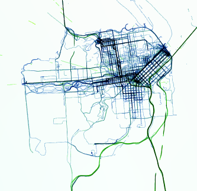

When cheap and portable GPS devices became available few years ago, I had an idea to start tracking myself everywhere I go and make a data visualization experiment with that data after few years.
1099 days have passed since I started collecting the data. In the meantime, I learned about WebGL which made this a fun and easy project. I was hoping this data visualization will reveal interesting patterns in my movement governed by my daily routines, personal motivations and the environment itself. And so it did. You can check out the visualization here
The fist question people ask me about this project is how I collected the data. It is quite simple actually. I have been using Maverick App on my Nexus One/4/7 for years. It tracks the data in the background and stores it in standard GPX file format. It is not perfect, and it definitely cuts the battery life, but from all the apps I've tried it requires the least intervention on my part. There are many alternatives on the app market and if you want, you can use a dedicated device for tracking such as Garmin GPS watch
One of the biggest technical challenges was to render this huge data set in real time so I can interactively change the parameters to explore different dimensions and segments of the data. Fortunately, the computers are very powerful nowadays and with the help of some WebGL shader trickery it wasn't a huge problem.
Another challenge was to get rid of the "dirty" data. As you probably know, GPS reception can be very bad in closed spaces. Moreover, if your device relies on WiFi signals to approximate it's position, you can get very inaccurate data. Consequently, I ended up having some noisy lines, especially around my house and other indoor spaces. I was able to get rid of most of this data by filtering out points based on speed and distance threshold.
Because of unreasonable FTA regulations, I was not able to keep my phone turned on during flights. However, it is possible to approximate flights by detecting large gaps in existing data. This part of my application needs a lot of improvement but I'm happy with the results I have so far.
That is it for now. I plan to keep collecting the data and revisit this project in couple of years. If you have any questions, comments or you want to learn how to make this for yourself, you know where to find me ;)